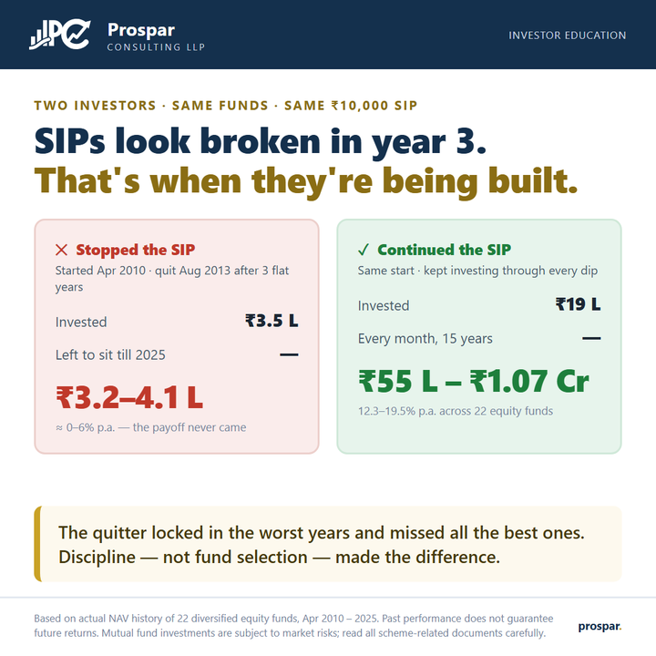

SIPs look broken in year 3. That's exactly when they're being built.
Two investors. The same funds. The same ₹10,000 monthly SIP, started the same month. Fifteen years later, one has up to ₹1.07 crore. The other still has about ₹4 lakh. The only difference was behaviour.

We tracked a ₹10,000 monthly SIP started in April 2010 across 22 real diversified equity funds: large cap, mid cap, small cap, value, flexi cap and hybrid. For the first three years the market went nowhere. By August 2013, every one of those SIPs looked like a mistake: money going in monthly, account value flat or below cost.
That is precisely where the two investors split. The confused investor stopped, left the ₹3.5 lakh already invested to sit, and moved on. Twelve years later that money is worth roughly ₹3.2–4.1 lakh: a return of about 0–6% a year. The patient investor kept the same SIP running through every correction, invested ₹19 lakh in total, and holds ₹55 lakh to ₹1.07 crore depending on the fund: 12.3–19.5% a year.
The lesson is uncomfortable but liberating: fund selection mattered far less than simply not stopping. Even the weakest fund rewarded persistence; even the strongest fund couldn't rescue a quitter. Corrections are when your SIP quietly buys more units: the payoff only shows up years later, all at once.
What does staying invested do for your SIP? Try the step-up calculator with a 10% yearly increase.
{kind=link}
Based on actual NAV history of 22 diversified equity funds, April 2010 – 2025. Past performance does not guarantee future returns. For education only (not investment advice or a product offer. Prospar Consulting LLP) mutual fund investments are subject to market risks; read all scheme-related documents carefully.